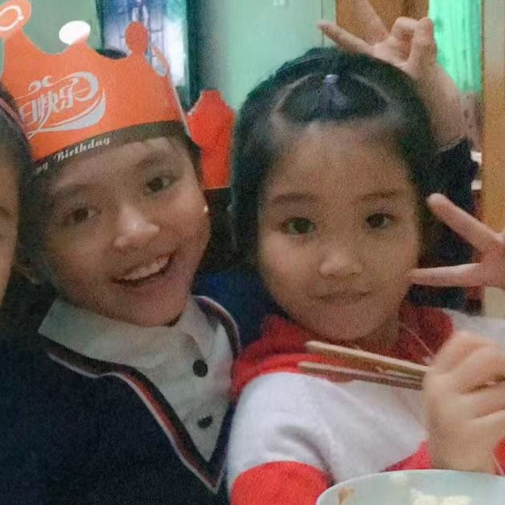

见字如晤，展信舒颜。
这网址牛逼吗，我弄了特别久=⩌⩊⩌=
说真的，我从很久以前就在想怎么给你写这封信，我觉得成年是一件很重要的事，也很多次设想过你这次生日要怎么过，却没想到在这天我们会相距上千公里。
不知道从什么时候开始我总觉得我们好像越来越远了，差了三个月，时间却总两年两年地将我们隔开。或许有点矫情，但我挺想你的，我可能这辈子也遇不到另一个人，能在两人很不相像的同时维持贯穿一生的友谊。
认识你真的很开心，无论从哪方面来说你给我的帮助都是巨大的。虽然我从来没说过，但你对我来说和别的朋友是不一样的，更像是家人的存在，如果可以的话，我倒是希望回到小时候想办法和你同一个年级，这样我们的关系会更亲密吗？（怎么写出来味道怪怪的(☉_☉)）
明明一开始想了很多话要说，不知道为什么在这么关键的时候写不出来了。你会怪我吗，怪我很少主动找你，怪我不会表达，怪我没有像你对我一样对你好。过于自私的性格让我很难懂得怎么才算付出，虽然说着可能像画饼，不过你等着吧，我会学会的。
过多寒暄的话就不说了吧，希望你以后的眼泪只献给幸福。虽然我很难来你身边，但我永远在你身后。
谢谢你出现在我的生命中。我与太多人的缘分朝生暮死犹如露水，唯独与你像一条生生不息的河流。
祝你成年快乐，安乐无忧。
2026.10.01